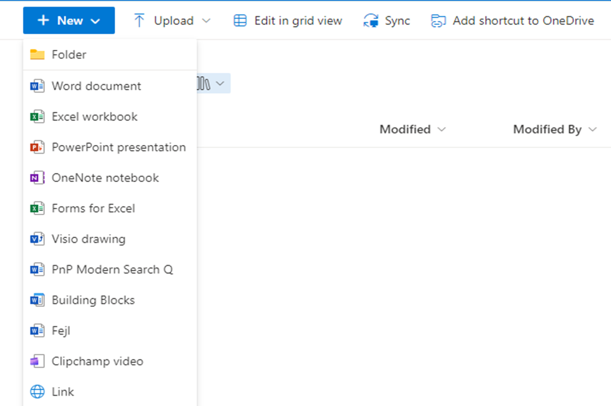

Add document templates to the New dropdown in a document library
Summary
It is pretty easy to add document templates to a document library in SharePoint Online by hand, but we often have to provide those document templates as part of a provisioning solution. This script shows how to add document templates to a document library using PnP PowerShell. The most importent property in this sample is view.NewDocumentTemplates. This property is a JSON string that contains the templates that are shown in the New dropdown in the document library. I am just using a string replacement approach using [ReplaceToken] in the baseNewTemplatesAsJson string to make it easy to add the new template to the list of templates.

function AddDocumentTemplateToLibrary {
param (
[Parameter(Mandatory=$true)]
[string]$targetUrl,
[Parameter(Mandatory=$true)]
[string]$templateFileUrl,
[Parameter(Mandatory=$true)]
[string]$libraryName,
[Parameter(Mandatory=$true)]
[string]$targetContentType,
[Parameter(Mandatory=$true)]
[string] $templateId,
[Parameter(Mandatory=$false)]
[string] $baseNewTemplatesAsJson
)
#add a doucment template from another site to the library using the NewDocumentTemplates
#in this case I assume that you want to create the library if it does not exist
$list = Get-PnPList -Identity $libraryName -Connection $targetConn -ErrorAction SilentlyContinue
if($null -eq $list)
{
New-PnPList -Title $libraryName -Template DocumentLibrary -Connection $targetConn
$list = Get-PnPList -Identity $libraryName -Connection $targetConn
}
#add the document template to the librarys Forms folder
if($templateFileUrl)
{
$targettemplateFileUrl = $targetConn.Url + "/$libraryName/Forms/"+ $templateFileUrl.Split("/")[-1]
#we can't be sure if the URL is using "sites" or "teams" so we need to check for both
if($templateFileUrl.IndexOf("/sites/") -gt -1)
{
$relativetemplateFileUrl = $templateFileUrl.Substring($templateFileUrl.IndexOf("/sites/"))
}
else
{
if($templateFileUrl.IndexOf("/teams/") -gt -1)
{
$relativetemplateFileUrl = $templateFileUrl.Substring($templateFileUrl.IndexOf("/teams/"))
}
else
{
throw "The template file URL does not contain /sites/ or /teams/"
}
}
#check if the file already exists in the library
$file = Get-PnPFile -Url $targettemplateFileUrl -Connection $targetConn -AsFileObject -ErrorAction SilentlyContinue
if(-not $file)
{
$localeTemplateContainer = "$($targetConn.Url)/$libraryName/Forms"
Copy-PnPFile -SourceUrl $relativetemplateFileUrl -TargetUrl $localeTemplateContainer -Connection $targetConn -Force -ErrorAction Stop
#I have seen that the file is not always available immediately after the copy, so we need to retry a few times
$retryindex = 0
while($retryindex -lt 5 -and -not $file)
{
Start-Sleep -Seconds 5
$file = Get-PnPFile -Url $targettemplateFileUrl -Connection $targetConn -AsFileObject -ErrorAction SilentlyContinue
$retryindex++
}
if(-not $file)
{
throw "Failed to copy the template file to the library"
}
}
}
$view = Get-PnPView -List $list -Connection $targetConn | Where-Object { $_.DefaultView -eq $true }
#if no value is provided for the baseNewTemplatesAsJson, then use the default value
if($baseNewTemplatesAsJson -eq $null -or $baseNewTemplatesAsJson -eq "")
{
$existingTemplates = $view.NewDocumentTemplates
#feel free to add or remove templates to the list
$baseNewTemplatesAsJson = '[{"visible":true,"title":"Folder","isFolder":false,"iconProps":{"iconName":"folder16_svg","className":"newDocumentCommandIcon_4913fd57"},"templateId":"NewFolder","order":0},{"visible":true,"title":"Word document","isFolder":false,"iconProps":{"iconName":"docx16_svg","aria-label":"docx","className":"newDocumentCommandIcon_4913fd57"},"templateId":"NewDOC","order":1},{"visible":true,"title":"Excel workbook","isFolder":false,"iconProps":{"iconName":"xlsx16_svg","aria-label":"xlsx","className":"newDocumentCommandIcon_4913fd57"},"templateId":"NewXSL","order":2},{"visible":true,"title":"PowerPoint presentation","isFolder":false,"iconProps":{"iconName":"pptx16_svg","aria-label":"pptx","className":"newDocumentCommandIcon_4913fd57"},"templateId":"NewPPT","order":3},{"visible":true,"title":"OneNote notebook","isFolder":false,"iconProps":{"iconName":"onetoc16_svg","aria-label":"onetoc","className":"newDocumentCommandIcon_4913fd57"},"templateId":"NewONE","order":4},{"visible":true,"title":"Excel survey","isFolder":false,"iconProps":{"iconName":"xlsx16_svg","aria-label":"xlsx","className":"newDocumentCommandIcon_4913fd57"},"templateId":"NewXSLSurvey","order":5},{"visible":true,"title":"Forms for Excel","isFolder":false,"iconProps":{"iconName":"xlsx16_svg","aria-label":"xlsx","className":"newDocumentCommandIcon_4913fd57"},"templateId":"NewXSLForm","order":6},{"visible":true,"title":"Visio drawing","isFolder":false,"iconProps":{"iconName":"vsdx16_svg","aria-label":"vsdx","className":"newDocumentCommandIcon_4913fd57"},"templateId":"NewVSDX","order":7}[ReplaceToken]]'
}
#get the ID of List Conten type for Document
$ct = Get-PnPContentType -List $list -Connection $targetConn | Where-Object { $_.Name -eq $targetContentType }
if($null -eq $ct)
{
throw "Failed to find the content type $targetContentType in the list $libraryName"
}
$replacer = ',{"contentTypeId":"'+ $($ct.Id.StringValue) +'","isUpload":true,"templateId":"'+ $templateId +'","title":"'+ $templateId+'","url":"'+$targettemplateFileUrl+'","visible":true}'
if($existingTemplates -ne $null)
{
$index = $existingTemplates.LastIndexOf("]")
$baseNewTemplatesAsJson = $existingTemplates.Substring(0, $index) + "[ReplaceToken]]"
}
$newtemplatesAsJson = $baseNewTemplatesAsJson -replace "\[ReplaceToken\]", $replacer
$view.NewDocumentTemplates = $newtemplatesAsJson
$view.Update()
Invoke-PnPQuery -Connection $targetConn
}
$libraryName = "Docs2"
$targetUrl = "https://contoso.sharepoint.com/sites/site1"
$templateFileUrl = "https://contoso.sharepoint.com/sites/GlobalTemplateSite/SiteAssets/PnP Modern Search Q.docx"
if($targetConn -eq $null)
{
$targetConn = Connect-PnPOnline -Url $targetUrl -Interactive -ReturnConnection -ClientId "your id"
}
if($sourceConn -eq $null)
{
$sourceConn = Connect-PnPOnline -Url $templateFileUrl -Interactive -ReturnConnection -ClientId "your id"
}
AddDocumentTemplateToLibrary -targetUrl $targetUrl -templateFileUrl $templateFileUrl -templateId "PnP Modern Search Q" -libraryName $libraryName -targetContentType "Document"
$templateFileUrl = "https://contoso.sharepoint.com/sites/GlobalTemplateSite/SiteAssets/Building%20Blocks.dotx"
AddDocumentTemplateToLibrary -targetUrl $targetUrl -templateFileUrl $templateFileUrl -templateId "Building Blocks" -libraryName $libraryName -targetContentType "Document"
$templateFileUrl = "https://contoso.sharepoint.com/sites/somesite/Shared%20Documents/Fejl.docx"
AddDocumentTemplateToLibrary -targetUrl $targetUrl -templateFileUrl $templateFileUrl -templateId "Fejl" -libraryName $libraryName -targetContentType "Document"
Check out the PnP PowerShell to learn more at: https://aka.ms/pnp/powershell
The way you login into PnP PowerShell has changed please read PnP Management Shell EntraID app is deleted : what should I do ?
Contributors
| Author(s) |
|---|
| Kasper Larsen |
Disclaimer
THESE SAMPLES ARE PROVIDED AS IS WITHOUT WARRANTY OF ANY KIND, EITHER EXPRESS OR IMPLIED, INCLUDING ANY IMPLIED WARRANTIES OF FITNESS FOR A PARTICULAR PURPOSE, MERCHANTABILITY, OR NON-INFRINGEMENT.